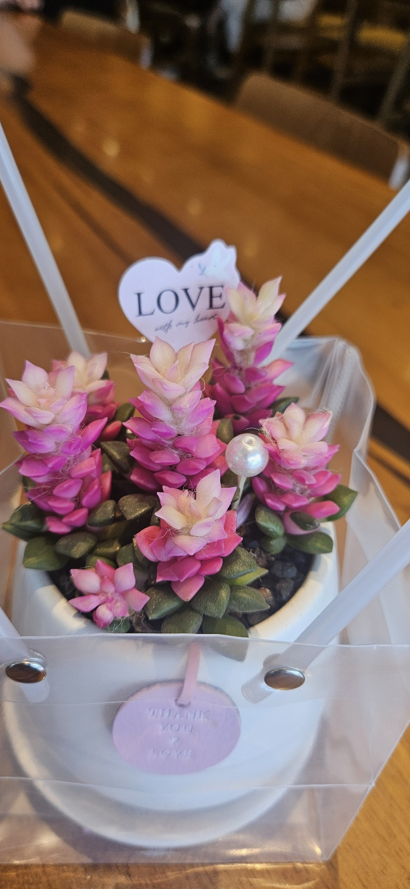

시리즈가 최장의 이름을 달고 공개되었다. 실망스러운 영화가 없던 시리즈였던 만큼 매우 기다리던 작품이었다. 단점이 없는 영화는 아니다.
오히려 단점이 많은 편이라 생각한다. 영화는 시리즈의 최종장이라는 장엄함을 뿜어내기 위해 계속해서 에단 헌트의 중요성을 강조한다. 그렇지만 영화 내부의 복잡한 고유 명사와 길고 긴 작전 설명이 합쳐져서, 어느 순간 작전의 완벽한 이해를 포기하고 빨리 뭐라도 했으면 좋겠다는 생각이 들게 된다. 나의 지능 문제일 수도 있지만 아무튼 그랬다. 엔티티의 존재가 전편과는 다르게 거의 맥거핀에 가까운 수준이 되어서 이야기의 주축으로서만 기동하는 점은 좋았지만, 이번 작의 메인 주된 대립인물인 가브리엘은 엔티티에게 버림받은 순간부터 메인 빌런으로써의 동기와 행보가 전혀 매력적이지 않다. 1편과 3편을 차용했지만, 그 작품들에서 볼 수 있었던 첩보물로서의 치밀함은 매우 약해졌다. 그렇지만 이 영화에서 결국 논해야 할 것은 지금까지 말한 부분들이 아닐 것이다.
